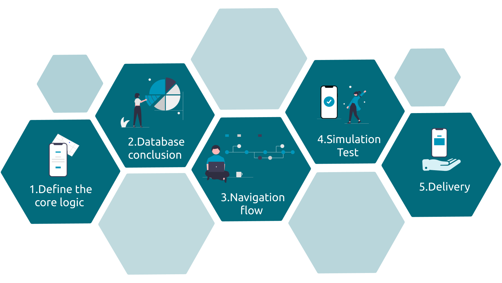

Our process
1. App Development post designing
2. App Launch

Websites, Web &Mobile Applications
Using the best practices to create smooth user experiences, we begin with your, customers & your business goals. As your technology partners it is imperative that we guide you through the process of choosing the most relevant & best suited platforms/technologies for your website & your applications.
Coming with the advantages of being highly adaptable, with same UI and business logic in all platforms,reduced code development time, increased time-to-market speed, with a potential ability to go beyond mobile, Flutter has all the elements from cross-platform and native development models to build robust applications.
A community driven framework, React native brings with it the advantage of maximum code reuse & cost saving, the unique feature of ‘live reload’, enabling you to see the result of the last change, super-fast & strong performance for mobile environments &modular with intuitive architecture.
From being supported by Google to easy to learn, AngularJS, supports single page application (SPA) features, allows for optimal web application management, has a powerful framework & allows real time testing.
A runtime environment, based on Chrome’s V8 JavaScript engine, NodeJS has become a stand-alone name in the industry. It’s efficiency enables overall development productivity, code sharing & reuse, good speed & performance, & a number of free tools
A JavaScript framework that has made the development process much easier, ReactJS comes with the advantages of being intuitive, provides reusable components, a strong blend of JavaScript & HTML, SEO friendly & simple with proficient data binding.
From desktop GUI application to big data, to web based applications to enterprise or mobile applications, Java is considered as the most robust programming language since it uses strong memory management. It is simple, platform independent, object oriented, economical, portable & stable.
One of the most versatile web development languages today, PHP, is simple to learn, extremely flexible with easy integration & compatibility & cost efficient.
Supported by all browsers & most friendly search engine, HTML is light weight, user friendly & can be easily integrated with other languages.
Cascading Style Sheets is a web design tool used to control the layout of a webpage while HTML deals with the actual content. It is supported by all browsers, improves the loading speed of all pages & makes the coding more presentable.
Known for speed & simplicity JavaScript supports creation of rich interfaces, can be used in many different kinds of applications because of support in other languages like Pearl and PHP.